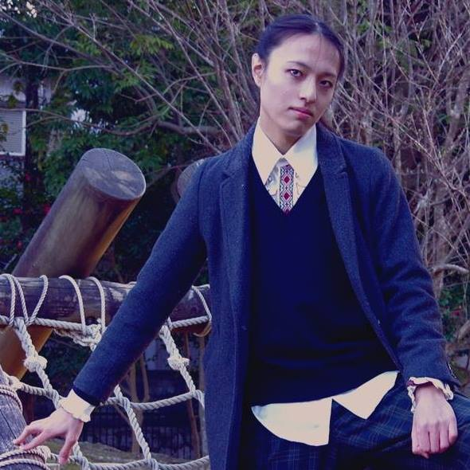
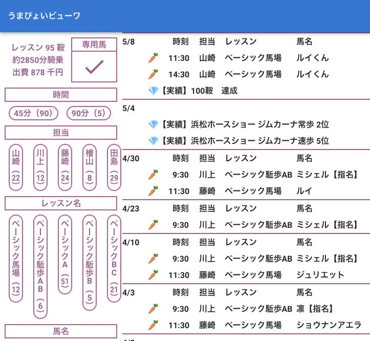
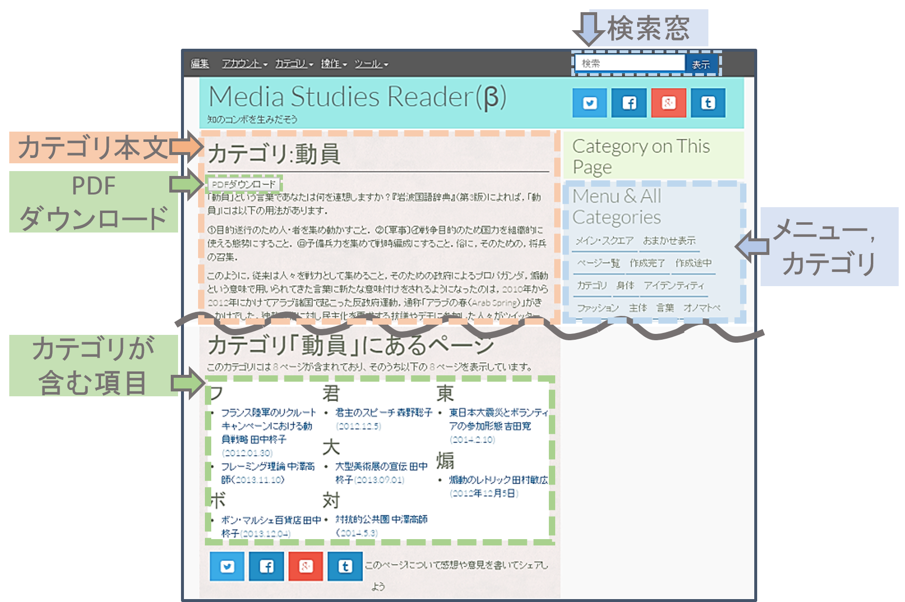
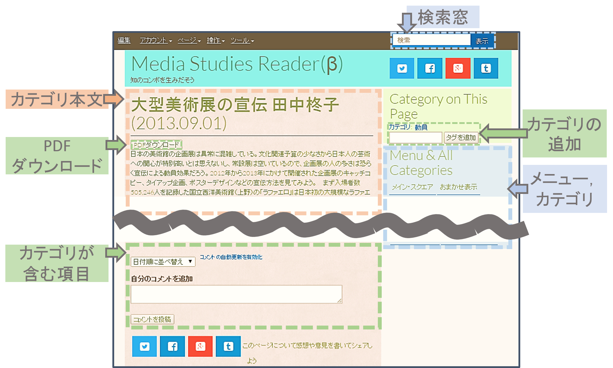
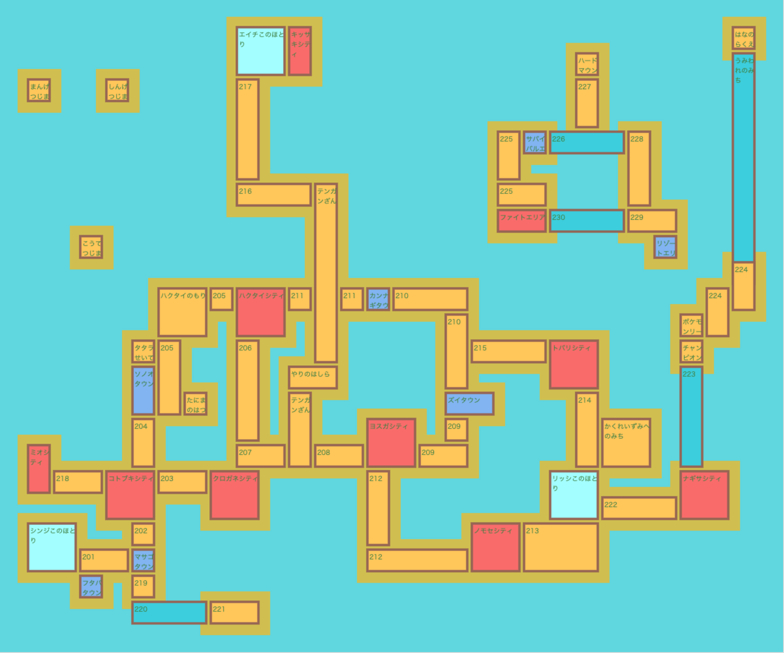
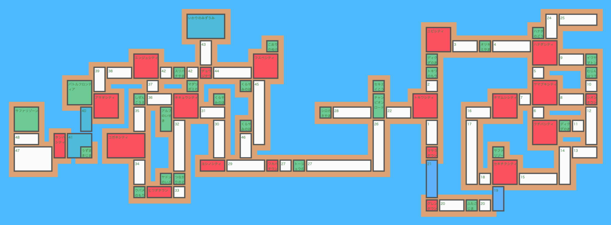
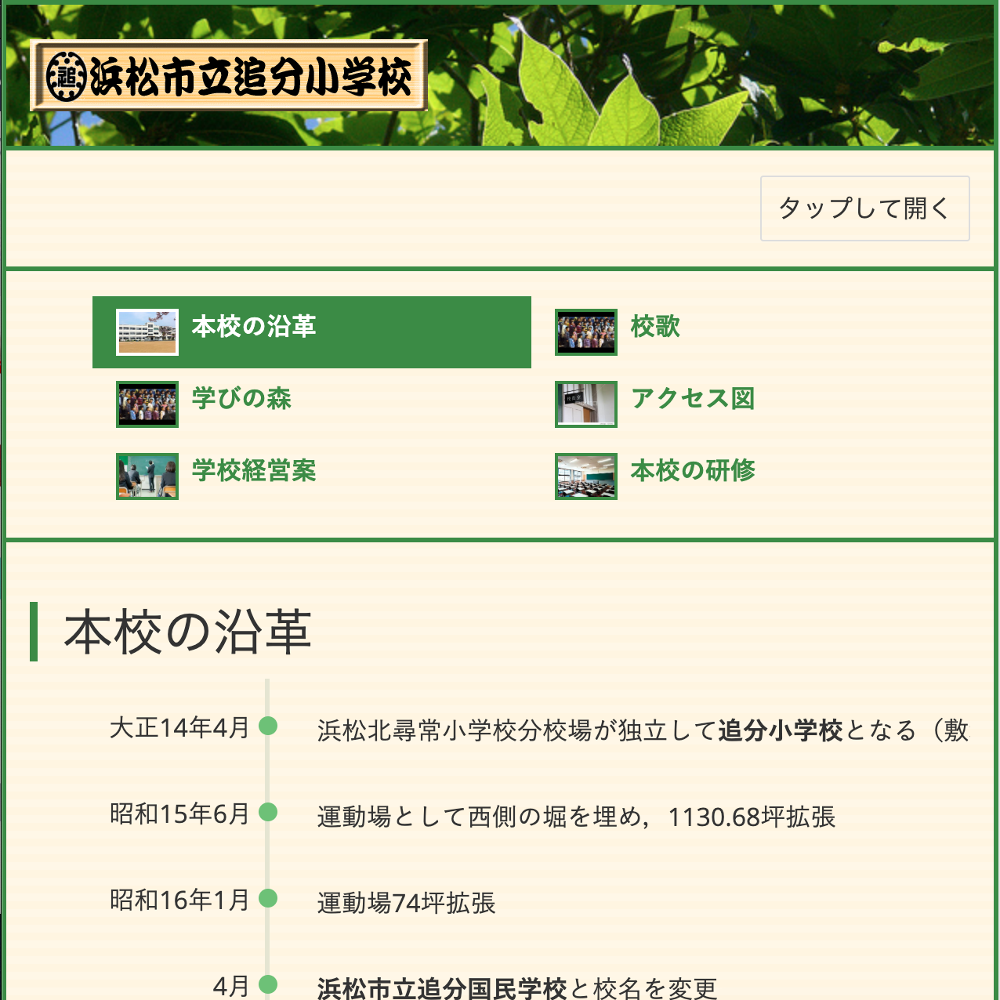
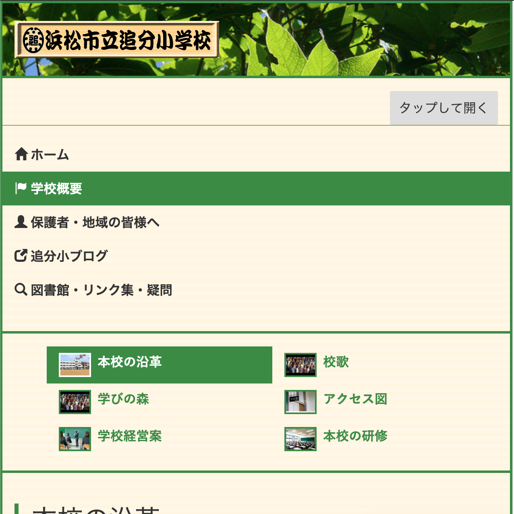
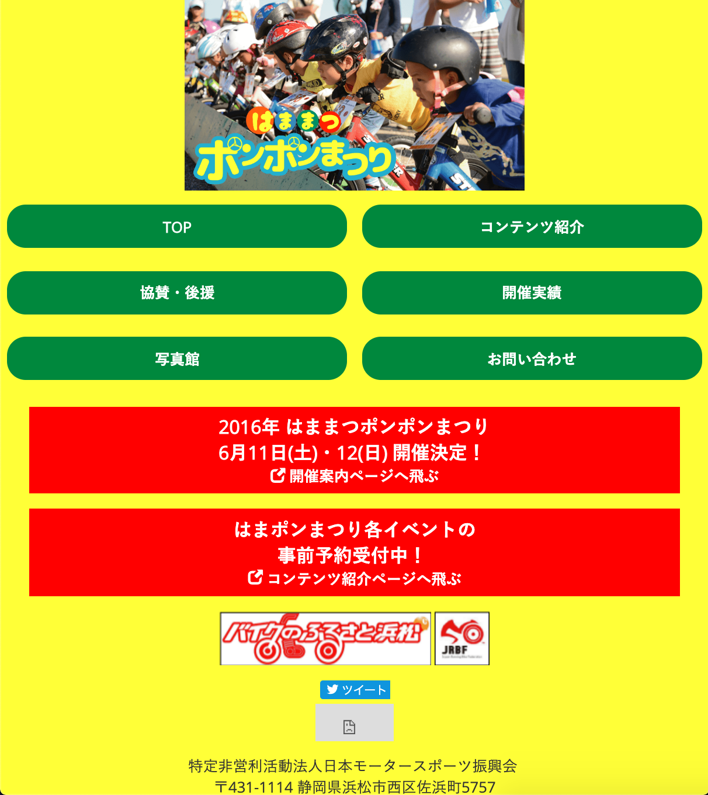
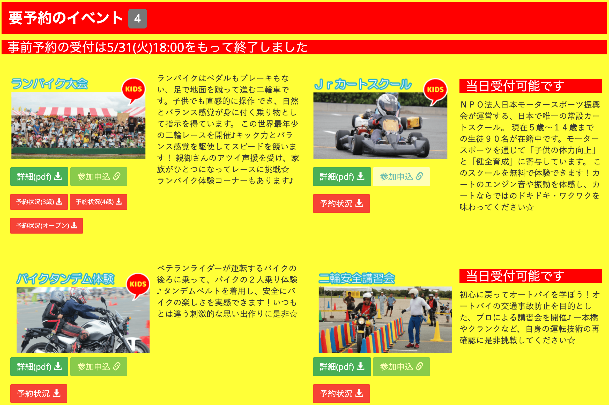

プロフィール

| 出身 | 静岡県浜松市 |
|---|---|
| 趣味 | バンド活動（aikoコピー、オリジナル）、乗馬、ボードゲーム、ボルダリング、ピアノ |
| 学歴 |
浜松工業高等学校 情報技術科 卒業 静岡大学 情報学部情報科学科 卒業 同大学院 総合科学技術研究科情報学専攻 修了 |
| X | @totom_saku |
経歴・スキル
2020年からソフトウェア開発企業にて、大手楽器メーカーへのエンジニアリング技術支援（準委任）に従事しています。 前半約3年間は動画制作WebサービスのフルスタックWeb開発（Vue.js / Node.js / AWS）を担当し、 2023年からは立体音響コアライブラリを Unity・Unreal Engine・Wwise などのゲームエンジン・サウンドミドルウェアで利用可能にする ネイティブSDK／プラグインの開発・保守・リリースを担当しています。 顧客のリポジトリにオーナーシップの無い開発者として参加し、既存の規約と設計判断を尊重して開発することを主なスキルとしています。 新しい技術のキャッチアップと製品実装を得意とし、近年は生成AIを組み込んだ開発プロセスの設計により、 品質と生産性の両立を推進しています。
2023年4月〜現在 ／ 立体音響ライブラリのクロスプラットフォーム展開支援
C++製の立体音響コアライブラリを、ゲームエンジン（Unity / Unreal Engine）および サウンドミドルウェア（Wwise ほか）上で利用可能にするネイティブプラグイン・SDKの 開発・保守・リリースを担当。対象プラットフォームは Windows / macOS / iOS / Android / VR（Meta Quest 2）/ 家庭用ゲーム機に及びます。
- 社内に経験者がいない中、未経験から Unreal Engine 開発を習得し、約1年でプラグインとデモアプリを製品化。以降UE領域を一貫して単独で主担当
- 信号処理の最適化（手書きSIMD、ARM64/NEON移植）と、性能リグレッションを検出する処理時間計測テストの精度改善（μ秒→ナノ秒）
- 家庭用ゲーム機向けセキュリティ要件への適合検証を単独で設計・構築。静的解析・実機での全API網羅テスト・違反再現による妥当性確認という多層検証を約3週間で確立し、テスト仕様書化
- AIコードレビューの品質統制を主導。レビュー観点をルールID付き指示ファイルとして体系化し、対照実験で効果を確認した上で開発フローへ導入
2020年7月〜2023年3月 ／ 動画制作Webサービス開発
動画生成ツール・BGM自動生成ツールを基盤とした動画制作Webサービスと、 動画生成機能をAPIとして提供するWebサービスのフルスタック開発を担当。
- AWSサーバーレス構成（API Gateway・Lambda・DynamoDB・StepFunctions 等）による商用サービスの構築・安定運用
- 動画生成APIの配信・ダッシュボード管理を行う REST API サービスのフルスタック開発（主担当）
- NP掛け払い・SoftBankペイメントサービスの決済連携を含む機能を実装し、月次リリースを継続
途中参加のプロジェクトだったため初期実装には関わっておらず、設計上の問題点に気づきながらも 工数の制約から改善に取り組めないもどかしさを経験しました。また、UIや音声など視覚・聴覚に頼るテストが多く 自動化が難しいという課題にも悩み、設計とテストへの問題意識を持つようになりました。 この経験が、続く立体音響プロジェクトでテスト基盤の整備に積極的に取り組む動機になっています。
業務の特徴
現在のプロジェクトでは、コーディングスタイルから Git リポジトリ・ブランチ・Issue・PR の運用方法まで、 顧客が定めたルールと運用のもとで開発しています。この環境で求められるのは、コードそのものの品質だけではありません。 コミットの粒度やメッセージ、Issue・PR の扱いといった、コーディングの周縁にある作業のひとつひとつにも品質があり、 それらをトータルした作業遂行能力が作業者に期待される品質だと考えています。 ビルドされた製品だけでなく、コードも、Gitリポジトリも、GitHub上のふるまいも、広い意味での成果物です。
生成AIの活用でも同じ考え方をしています。AIに良いコードを書かせるだけでは足りず、 コミットメッセージやコミット粒度が運用から逸脱する問題に気づいてからは、 プロジェクトの運用方法をAIに教え、周縁作業まで含めた品質を統制するようにしています。
技術スタック
| 言語 |
|
|---|---|
| エンジン・MW |
|
| クラウド | AWS（サーバーレス構成の設計・構築） |
| 開発支援 | Git / GitHub、Claude Code、GitHub Copilot（AIレビュー・エージェント駆動開発を含む開発フローの設計・運用） |
| 趣味・個人開発 | Next.js、SvelteKit、Quarkus、Cloudflare Workers など。 生成AIエージェントとの協働を通じて個人開発で使用しているもので、業務での使用経験とは区別しています。 |
| 資格 | 応用情報技術者試験（2022年10月合格） |
社外活動・自己研鑽
- 技術書輪読会・LT会を社内有志で企画・運営
- 勉強会コミュニティとして JAWS-UG 浜松支部（AWS）、Hamamatsu.js（JavaScript）に参加
- 労働時間計算のChrome拡張機能や会議室予約タイムライン確認サイトを開発して社内公開
詳細な職務経歴書はご連絡いただければお送りします。
制作物
「七輪ライブラリー」— バンドのライブ歴閲覧アプリ ↗
「yoropiku」— ローカル画像・動画ビューワ ↗
生成AIエージェントのお試しとして、自分の欲しいものを作ってみた事例です。 ローカルの画像・動画をブラウザで閲覧・整理するアプリで、複数フォルダのライブラリ管理に対応しています。 開発はエージェントに任せきりで、私はコードを読んでいません。いわゆるバイブコーディングです。 業務ではAI生成コードにセルフレビュー・AIレビュー・自身のコードリーディングの三段構えを課していますが、 その対極として「全部任せたらどこまで作れるのか」を試した実験でもあります。 ソースコードはGitHubにあります。
「乗馬歴アプリ」— 乗馬レッスン記録ビューワ
公開不可趣味の乗馬のレッスン記録を閲覧できるWebアプリです。 記録は最初、専用ノートに手書きしていましたが、「この馬に乗るのは何回目？」「このレッスンは何回目？」の手計算が 面倒になりスプレッドシート管理に移行。さらに人に趣味を話すとき、スプレッドシートのリンク共有では野暮ったいので、 パッと見せられるWebアプリにしました。 通算の鞍数・騎乗時間・出費の集計を表示するほか、時間・担当・レッスン名・馬名でレッスン記録を絞り込めます。 スプレッドシートを Google Apps Script で Web API 化し、フロントエンド（Vue.js + Vuetify）から Fetch API で JSON を取得する構成で、GitHub Pages で公開していました。 設計をしないまま作り始めた結果、作業の終わりが曖昧になって開発が停滞するという反省もあり、 「面倒でも設計で終わりを明確にする」「開発の記録をつける」という教訓を得ました。 この開発について乗馬記録の実物を交えてLT発表をしています。 ※データ元のスプレッドシートとAPIが現存しないため、現在アプリは動作しません。

Wikipediaライクな教科書システムの実装
公開不可学部卒業研究で作ったものです。紙の教科書みたいに最初から最後まで流れのある編纂物とは違った、 ニコニコ大百科のような教科書があったら面白いよね、という発想で作ったものです。 2014年度に大学のドメインで公開して、静岡大学情報学部情報社会学科で開講の科目「公共圏論」で実際に学生に触ってもらいました。 WikiエンジンはWikipediaが採用している MediaWiki です。 LAMP構成で構築し、必要に応じてフロントエンドを JavaScript で拡張しました。 研究としての新規性という点では課題が残りましたが、実際の授業で学生に使ってもらえたこと、 そして後に後輩のひとりが「これみたいなものを作りたい」とWebエンジニアを志すきっかけになったと聞けたことは、 作ってよかったと思える成果でした。


ポケモンBGMのYoutube検索を支援するタウンマップ型アプリ ↗
2015年作。ゲーム音楽のピアノアレンジが趣味の私は よくYoutubeで他人のアレンジを聴いていました。 しかし、マップの名前をいちいち憶えているわけでもなく、 アップロード者のつけたタイトルにもしばしば表記ゆれが見られました。 極めつけは同じBGMが複数の別名のマップで使われているケースで、 想定される範囲でORとANDを駆使して探し出す必要があります。 そこで、タウンマップ上のエリアをクリックするだけで目的のBGMの検索結果に飛べるようにしたのが、このアプリです。 デスクトップ上では、マウスオーバーしたエリアと共通のBGMのエリアが赤く点滅します。 デスクトップでの利用を前提に設計したため、タッチデバイスには対応していません。 実装はビジュアルデザインを用途とする Processing 言語を使い、 Webブラウザ上で使用可能にするため JavaScript 移植版の Processing.js で書きました。画像を用いないので、 ソースコード単体では非常に軽量に動作するアプリになります。 ソースコードはGitHubにあります。


浜松市立追分小学校ホームページリニューアル
公開不可2015年に静岡大学情報学部「地域連携推進室」によるボランティア募集を受けて参加・制作を行い、2016年４月に公開されたものです。 ３グループでのコンペ形式で企画・制作を行い、自グループ案が採用されたものになります。グループで設計と実装を分業して、私は実装を担当しました。 テキストサイト風味あふれる旧サイトから、スマートフォン表示対応のモダンなサイトに生まれ変わりました。 これには、学校が保護者への連絡チャネルとしてホームページを活用したいというニーズがあり、 多くの保護者がスマートフォンを利用しているという背景がありました。 手軽にレスポンシブ対応するため、導入が容易なオリジナルBootstrapテーマの 「Honoka」を使用しました。


「はままつポンポンまつり」ホームページ制作・運用
公開不可2015年〜2016年、NPO法人・日本モータースポーツ振興会さんのイベント「はままつポンポンまつり」のホームページ制作・運用を行いました。 私自身も「はまポン」の実行委員会に加わり、協賛や出展内容の追加・変更の連絡を受けてホームページの更新を行いました。 オリジナルBootstrapテーマの「Honoka」を使用しました。 現在公開されているページはその後リニューアルされており、当時のものとは異なります。


趣味
-
🐴 乗馬体験記乗馬体験の記録です
-
🎹 ピアノ楽譜score and music
-
🔔 ドラえもんdoraemon material
-
🎸 バンド活動（aikoコピー、オリジナル）キーボードを担当しています。ライブ歴は制作物の「七輪ライブラリー」で見られます
リンク
一般
- はてなブログブログです
- SoundCloud趣味で作った耳コピ・オリジナルの音源を置いています